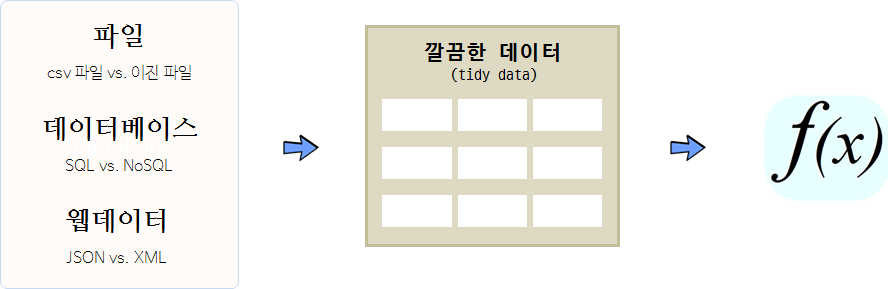

데이터 과학
데이터분석을 위한 파이프라인
학습 목표 1
- 전체적인 데이터 분석 파이프라인을 살펴본다.
- 원천 데이터를 깔끔한 데이터로 변환하는 이유를 이해한다.
1. 데이터 분석 파이프라인
데이터 분석은 다른 소프트웨어 개발과 동일하게 컴퓨터 시간(Computer time)과 개발자 시간(Human time)을 최적화하는 과정으로 볼 수 있다. 최근에 가장 희귀하고 귀중한 자원은 컴퓨터가 아니라 개발자 시간 즉, 사람이다.
따라서, 사람 시간을 최적화하는 것이 데이터 분석에서 가장 중요한 요소가 되면 그 해답이 %>% 즉, magrittr 팩키지에도 존재한다. 프랑스 액센트가 들어간 magrittr 팩키지는 개발시간을 단축하고 코드 가독성을 높이고 유지보수성을 높이는 목적을 갖고 있다. 유닉스 쉘, F#, haskell, clojure, method chaining에서 영감을 받았다.

파일(.csv같은 일반 텍스트 파일, 엑셀같은 이진 파일) 형태, 데이터베이스(SQL, NoSQL) 형태, 웹데이터(JSON, XML) 형태로 존재하는 데이터를 가져와서 이를 분석에 적합한 형태, 즉 깔끔한 데이터(tidy data)로 변환을 해야만 한다. 깔끔한 데이터는 기계도 잘 이해하고, 분석가도 잘 이해하는 형태가 되어야 한다.
| 기계 저장 방식 | 사람 이해 방식 |
|---|---|
| 파일/테이블 | 데이터셋(Data set) |
| 행(row) | 관측점(Observation) |
| 열(column) | 변수(Variable) |
1.1. magrittr 코드와 일반 R 코드 비교 2
mtcars 데이터셋을 파이프를 통해 데이터를 깔끔하게 정리하는 것과 기존 전통적 방식으로 개발된 코드를 비교해 보자.
library(magrittr)
car_data <-
mtcars %>%
subset(hp > 100) %>%
aggregate(. ~ cyl, data = ., FUN = . %>% mean %>% round(2)) %>%
transform(kpl = mpg %>% multiply_by(0.4251)) %>%
printFALSE cyl mpg disp hp drat wt qsec vs am gear carb kpl
FALSE 1 4 25.90 108.05 111.00 3.94 2.15 17.75 1.00 1.00 4.50 2.00 11.010090
FALSE 2 6 19.74 183.31 122.29 3.59 3.12 17.98 0.57 0.43 3.86 3.43 8.391474
FALSE 3 8 15.10 353.10 209.21 3.23 4.00 16.77 0.00 0.14 3.29 3.50 6.419010
전통적인 R코드는 본인이 작성하지 않았다면 해독하기가 만만치 않고, 괄호가 많다.
car_data <-
transform(aggregate(. ~ cyl,
data = subset(mtcars, hp > 100),
FUN = function(x) round(mean(x, 2))),
kpl = mpg*0.4251)결국 읽기 어렵고 이해하기 힘든 함수 조합을 가독성 높은 순열(sequence)로 변환하는 역할을 한다.
x %>% f(y)
# f(x, y)
x %>% f(z, .)
# f(z, x)
x %>% f(y) %>% g(z)
# g(f(x, y), z)
2. 데이터 과학을 위한 파이프라인 팩키지 모음 - tidyverse
데이터 과학을 위한 파이프라인은 유닉스 파이프와 마찬가지로 각 모듈별로 통일된 인터페이스를 유지해야만, 앞선 선행작업을 후행작업과 연결하거나 조합하여 사용한다. 처음으로 데이터를 가져와서 최종적으로 의사소통하는 일련의 과정에 데이터 과학 각 모듈별로 공통된 인터페이스를 갖고 이를 조합하여 연결해내는 과정을 tidyverse 팩키지에 수많은 데이터과학자의 노력이 녹아져 있다.
- 데이터 가져오기
- readr : 데이터 가져오기
- DBI : 데이터베이스
- haven: SPSS, SAS, Stata
- httr: 웹 APIs
- jsonlite: JSON
- readxl: 엑셀
- rvest: 웹스크래핑
- xml2: XML
- readr : 데이터 가져오기
- 데이터 정제
- tidyr : 데이터 깔끔화
- dplyr : 데이터 조작
- ggplot2 : 데이터 시각화
- ggvis: 인터랙티브 시각화
- purrr : 함수형 프로그래밍
- 데이터 자료형
- tibble : 최신 데이터프레임
- hms : 시간 자료형
- stringr : 문자열 자료형
- lubridate : 날짜/시간 자료형
- forcats : 요인 자료형
- 모형
- modelr : 파이프라인 내부 모형개발
- broom : 모형산출물을 깔끔한 데이터로 변환
- 의사소통
- rmakrdown : 마크다운 문서화
- bookdown : 다양한 출력물 산출(pdf, html, ePub등)
- flexdashboard : 정적 인터랙티브 대쉬보드
- shiny : 웹응용프로그램, 동적 대쉬보드
2.1. 깔끔한 데이터 – tidyr
suppressMessages(suppressWarnings(library(tidyr)))
suppressMessages(suppressWarnings(library(readr)))
suppressMessages(suppressWarnings(library(dplyr, warn.conflicts = FALSE)))
suppressMessages(suppressWarnings(library(curl)))
# 데이터 가져오기
tb <- tbl_df(read_csv(url("https://raw.githubusercontent.com/hadley/tidyr/master/vignettes/tb.csv")))
tbFALSE # A tibble: 5,769 × 22
FALSE iso2 year m04 m514 m014 m1524 m2534 m3544 m4554 m5564 m65 mu
FALSE <chr> <int> <int> <int> <int> <int> <int> <int> <int> <int> <int> <int>
FALSE 1 AD 1989 NA NA NA NA NA NA NA NA NA NA
FALSE 2 AD 1990 NA NA NA NA NA NA NA NA NA NA
FALSE 3 AD 1991 NA NA NA NA NA NA NA NA NA NA
FALSE 4 AD 1992 NA NA NA NA NA NA NA NA NA NA
FALSE 5 AD 1993 NA NA NA NA NA NA NA NA NA NA
FALSE 6 AD 1994 NA NA NA NA NA NA NA NA NA NA
FALSE 7 AD 1996 NA NA 0 0 0 4 1 0 0 NA
FALSE 8 AD 1997 NA NA 0 0 1 2 2 1 6 NA
FALSE 9 AD 1998 NA NA 0 0 0 1 0 0 0 NA
FALSE 10 AD 1999 NA NA 0 0 0 1 1 0 0 NA
FALSE # ... with 5,759 more rows, and 10 more variables: f04 <int>, f514 <int>,
FALSE # f014 <int>, f1524 <int>, f2534 <int>, f3544 <int>, f4554 <int>,
FALSE # f5564 <int>, f65 <int>, fu <int>
# 자료분석을 위한 형태로 변형한다.
tb2 <- tb %>%
gather(demographic, n, m04:fu, na.rm = TRUE)
tb2FALSE # A tibble: 35,750 × 4
FALSE iso2 year demographic n
FALSE * <chr> <int> <chr> <int>
FALSE 1 AD 2005 m04 0
FALSE 2 AD 2006 m04 0
FALSE 3 AD 2008 m04 0
FALSE 4 AE 2006 m04 0
FALSE 5 AE 2007 m04 0
FALSE 6 AE 2008 m04 0
FALSE 7 AG 2007 m04 0
FALSE 8 AL 2005 m04 0
FALSE 9 AL 2006 m04 1
FALSE 10 AL 2007 m04 0
FALSE # ... with 35,740 more rows
# 변수를 성별과 연령으로 쪼갠다.
tb3 <- tb2 %>%
separate(demographic, c("sex", "age"), 1)
tb3FALSE # A tibble: 35,750 × 5
FALSE iso2 year sex age n
FALSE * <chr> <int> <chr> <chr> <int>
FALSE 1 AD 2005 m 04 0
FALSE 2 AD 2006 m 04 0
FALSE 3 AD 2008 m 04 0
FALSE 4 AE 2006 m 04 0
FALSE 5 AE 2007 m 04 0
FALSE 6 AE 2008 m 04 0
FALSE 7 AG 2007 m 04 0
FALSE 8 AL 2005 m 04 0
FALSE 9 AL 2006 m 04 1
FALSE 10 AL 2007 m 04 0
FALSE # ... with 35,740 more rows
tb4 <- tb3 %>%
rename(country = iso2) %>%
arrange(country, year, sex, age)
tb4FALSE # A tibble: 35,750 × 5
FALSE country year sex age n
FALSE <chr> <int> <chr> <chr> <int>
FALSE 1 AD 1996 f 014 0
FALSE 2 AD 1996 f 1524 1
FALSE 3 AD 1996 f 2534 1
FALSE 4 AD 1996 f 3544 0
FALSE 5 AD 1996 f 4554 0
FALSE 6 AD 1996 f 5564 1
FALSE 7 AD 1996 f 65 0
FALSE 8 AD 1996 m 014 0
FALSE 9 AD 1996 m 1524 0
FALSE 10 AD 1996 m 2534 0
FALSE # ... with 35,740 more rows
2.2. 변환 – dplyr
- select: 데이터테이블에서 변수를 뽑아낸다.
- filter: 값으로 관측점을 뽑아낸다.
- mutate: 신규 변수를 생성한다. (log 변환)
- summarise: 관측점을 하나로 축약한다. (평균)
- arrange: 관측점을 오름차순, 내림차순으로 정렬한다.
2.3. 시각화 – ggvis
- ggplot2
- shiny
- dplyr 파이프라인
- vega
2.4. 모형 – broom
모형은 알려진 패턴을 제거하는데 탁월하다.
suppressMessages(suppressWarnings(library(tidyr)))
suppressMessages(suppressWarnings(library(ggplot2)))
suppressMessages(suppressWarnings(library(broom)))
tx <-
readRDS("tx-housing.rds") %>%
mutate(date = year + (month - 1) / 12) %>%
filter(!(city %in% c("Texas Totals", "Palestine")))
tx
ggplot(tx, aes(date, log(sales))) +
geom_line(aes(group = city), alpha = 1/2)
ggsave("sales.pdf", width = 8, height = 6)
# Models as a tool --------------------------------------------------------
tx <- tx %>%
group_by(city) %>%
mutate(
resid =
lm(log(sales) ~ factor(month), na.action = na.exclude) %>%
resid()
)
ggplot(tx, aes(date, resid)) +
geom_line(aes(group = city), alpha = 1/5) +
geom_line(stat = "summary", fun.y = "mean", colour = "red")5. 빅데이터
| 구분 | 데이터 크기 |
|---|---|
| 매우 큰 데이터 | 컴퓨터 한대 메모리에 저장될 수 없는 크기 : >5 TB |
| 중간 데이터 | 서버 컴퓨터 메모리에 저장할 수 있는 크기 : 10 GB – 5 TB |
| 작은 데이터 | 노트북 컴퓨터 메모리에 저장할 수 있는 크기 : **<10 GB |
전통적으로 R은 작은 데이터를 빠르게 탐색하는데 최적의 환경을 제공한다. 중간크기 데이터를 작업하지 못할 기술적인 이유는 없지만, 거의 작업이 이뤄지지 않고 있다.
빅데이터를 처리하는 전략
- 요약/표본추출/부분집합 추출 (90%)
- 작은 데이터 문제로 쪼개서 분할 정복 (9%)
- 더이상 어찌할 수 없는 큰 문제 데이터 (1%)